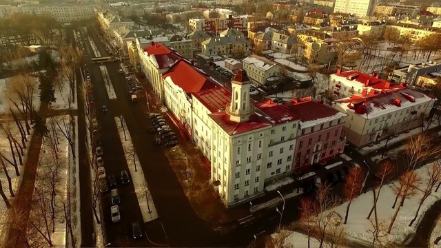

Минск – крупнейший политический, экономический, культурный и научный центр Республики Беларусь имеющий богатейшую историю,которая отсчитывается с 1067 года.Минск очень сильно пострадал во время Второй мировой войны, однако многие монументальные постройки остались целы, а город был быстро восстановлен. На данный момент самое высокое здание в городе является 34-этажный жилой дом «Парус» (высота 133 м). Город насчитывает множество интереснейших достопримечательностей, мест где можно вкусно поесть и остановиться во время путешествия. Богатая культурная жизнь, часто проводятся различные мероприятия которые собирают толпы народа, нередки и международные спортивные мероприятия.Город расположен недалеко от географического центра страны и стоит на реке Свислочи. Площадь составляет 348,84 км², население — 2 018 281 человек (по итогам переписи 2019 года) без учёта пригородов. Город-герой.Так-же город славится чистотой улиц. Национальный состав населения: белорусы (80%), русские (10%), украинцы, поляки, евреи, литовцы, армяне, татары.
Одна из древнейших частей Минска. Этот район с 16 века стал центром города из-за того, что его предшественник, Замчище, часто подвергался пожарам и разрушениям. Именно Верхний город сегодня называют историческим центром Минска. Здесь расположены важнейшие достопримечательности: Ратуша и архитектурный ансамбль на площади Свободы, гостиный двор, отель «Европа», костел Пресвятейшей Девы Марии, комплекс базыльянских монастырей, Свято-Духов кафедральный собор.
Рядом с Верхним городом, на левом берегу Свислочи раскинулся уютный квартал из милых 2-3-этажных домиков. Это Троицкое предместье. Раньше здесь располагалось множество церквей (в том числе первый католический храм Минска) и монастырей. К сожалению, почти ничего из этого не осталось. Да и сам квартал был по сути построен в 80-х гг. на сохранившихся фундаментах. Тем не менее, выглядит Троицкое предместье достаточно аутентично. Здесь большое количество кафе и ресторанов, антикварных лавок и художественных мастерских, книжных и сувенирных магазинов. Рядом с Троицким предместьем находится Остров Мужества и Скорби с мемориалом, посвященным белорусам, погибшим во время войны в Афганистане
Главную улицу Минска, а точнее участок от площади Независимости до станции метро «Парк Челюскинцев», мы решили выделить в отдельный район. Именно здесь можно познакомиться с уникальным архитектурным стилем: сталинским ампиром. Абсолютное большинство зданий было построено с нуля после войны, но есть и довоенные сооружения, восстановленные и отреставрированные.
Относительно молодой район, расположенный неподалеку от знаменитого Минского тракторного завода. Красивые малоэтажные дома были построены после войны силами немецких военнопленных. Минчане только начинают открывать для себя этот район города. Поэтому здесь пока еще нет уютных кофеен и винных баров, но можно не сомневаться, что через десятилетие Тракторозаводской поселок станет одним из самых модных мест в Минске.
Плюсы минска
Клип про Минск